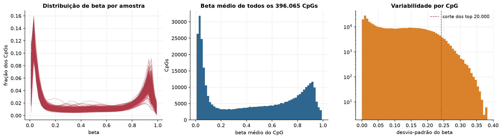
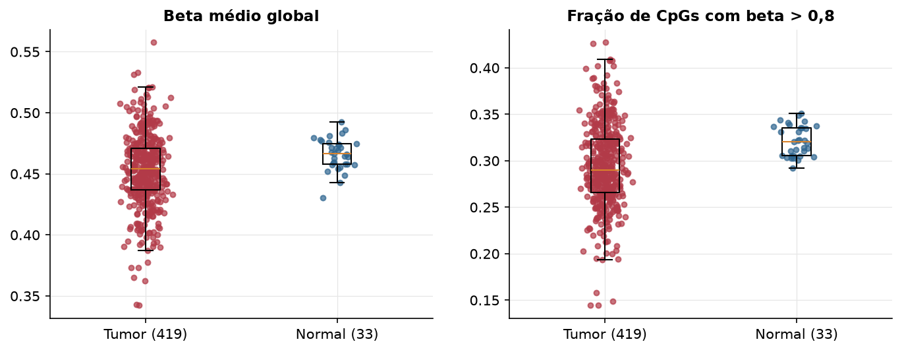
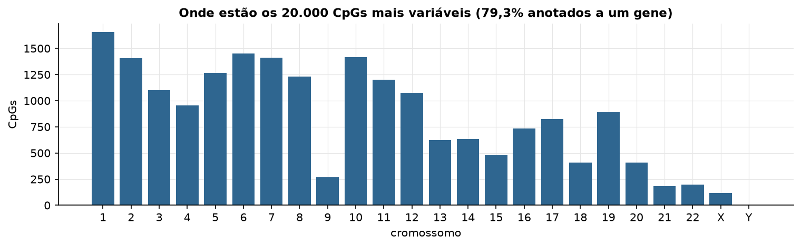
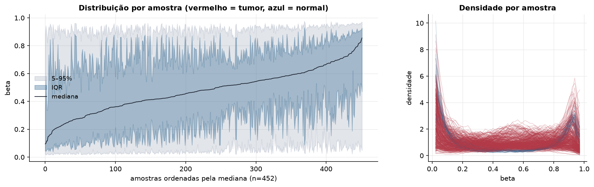
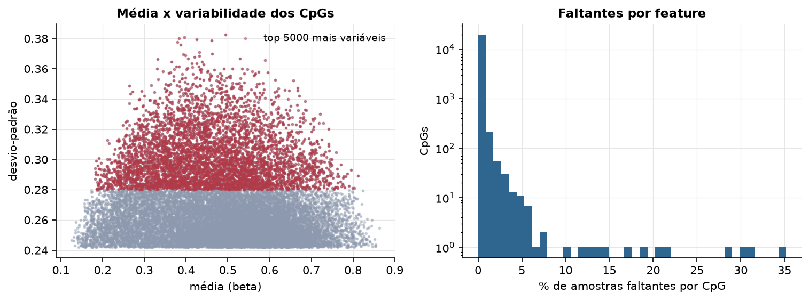
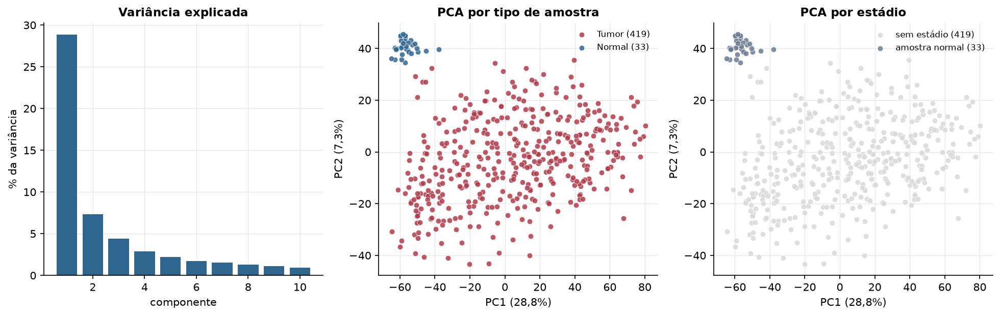
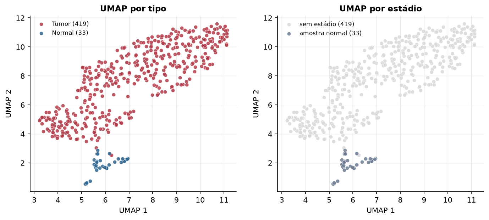
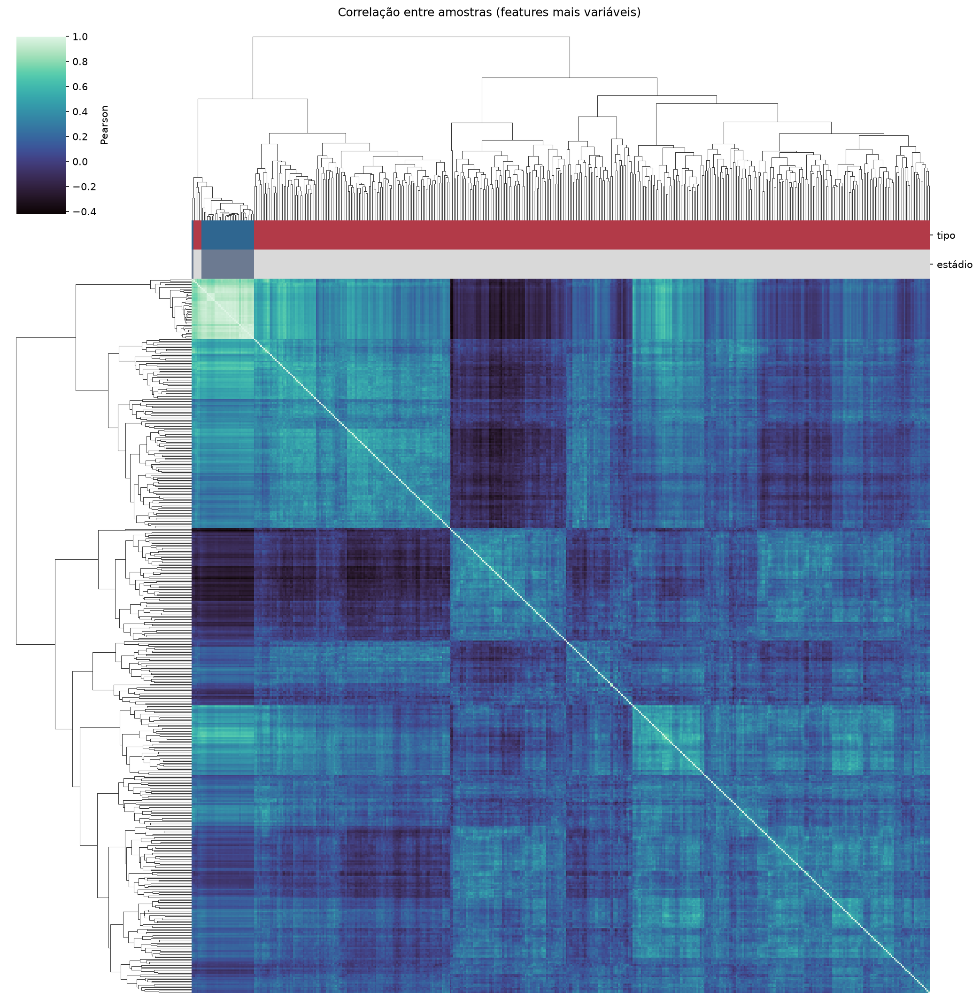
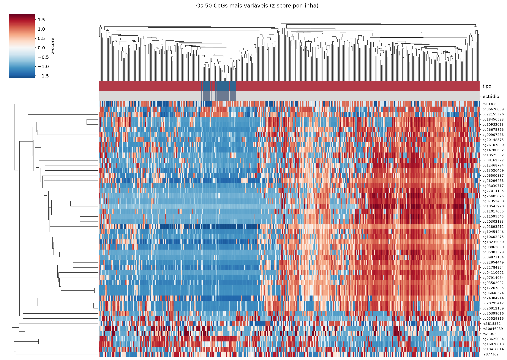
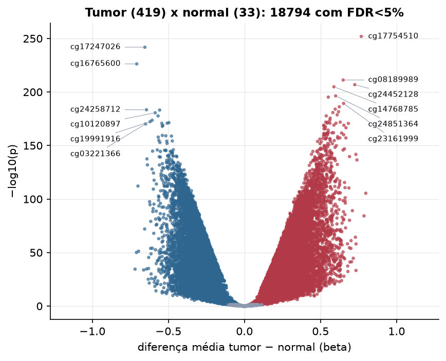

UCEC · Metilação do DNA (450k)
Illumina Infinium HumanMethylation450, valores beta (0 a 1) · gerado em 22/10/2026 06:00
396.065CpGs medidos
378.423CpGs sem faltante
20.000CpGs
419amostras tumorais
33amostras normais
0,1%valores faltantes
Fonte: PanCanAtlas HM450 via API do Xena
O array tem ~485 mil CpGs. Para não ocupar espaço, guardamos estatísticas de todos os CpGs e só os 20.000 mais variáveis para PCA, UMAP e heatmaps.
Principais resultados
- A distribuição de beta é bimodal: a maioria dos CpGs está quase toda desmetilada (perto de 0, típico de ilhas CpG em promotores) ou quase toda metilada (perto de 1, corpo gênico e regiões intergênicas). 40,1% dos CpGs têm beta médio intermediário (0,2 a 0,8).
- Beta médio global: 0,454 nos tumores e 0,467 nos normais (hipometilação global no tumor, como é comum em câncer).
- 20.000 CpGs medidos em 452 amostras (419 tumorais e 33 normais); 0,1% dos valores estão faltando.
- Os dois primeiros componentes principais explicam 28,8% e 7,3% da variância das features mais variáveis.
- Correlação mediana entre amostras: 0,18.
- Tumor x normal: 18794 CpGs diferentes com FDR < 5% (10272 maiores no tumor, 8522 maiores no normal; 32 pacientes têm o par tumor-normal).
- Mais aumentados no tumor: cg17754510, cg08189989, cg24452128, cg14768785, cg24851364, cg08516516, cg23161999, cg25113237.
- Mais reduzidos no tumor: cg17247026, cg16765600, cg24258712, cg10784273, cg10120897, cg06081580, cg09170112, cg19991916.
- Associações clínicas com p < 0,05 nos componentes principais: PC1 com idade (p=5.6e-05); PC2 com idade (p=0.038); PC3 com idade (p=4e-06); PC1 com sobrevida (p=0.0024); PC3 com sobrevida (p=0.00023).
Distribuição global



Exploração dos CpGs mais variáveis
Distribuição dos valores


Estrutura das amostras




Tumor x normal

Features mais diferentes entre tumor e normal
| diferenca_tumor_menos_normal | t | p | fdr | |
|---|---|---|---|---|
| cg17754510 | 0.768 | 78.253 | 1.25e-252 | 2.49e-248 |
| cg17247026 | -0.655 | -69.448 | 1.34e-242 | 1.34e-238 |
| cg16765600 | -0.708 | -79.137 | 5.53e-227 | 3.69e-223 |
| cg08189989 | 0.649 | 59.542 | 6.18e-212 | 3.09e-208 |
| cg24452128 | 0.725 | 80.609 | 1.39e-207 | 5.57e-204 |
| cg14768785 | 0.588 | 57.002 | 1.27e-205 | 4.23e-202 |
| cg24851364 | 0.599 | 53.728 | 4.16e-197 | 1.19e-193 |
| cg08516516 | 0.551 | 53.318 | 6.03e-196 | 1.51e-192 |
| cg23161999 | 0.652 | 58.839 | 5.12e-190 | 1.14e-186 |
| cg25113237 | 0.624 | 51.992 | 6.15e-187 | 1.23e-183 |
| cg16707405 | 0.597 | 55.491 | 1.05e-184 | 1.91e-181 |
| cg24258712 | -0.644 | -55.945 | 3.85e-184 | 6.42e-181 |
| cg10784273 | -0.558 | -49.965 | 7.28e-184 | 1.12e-180 |
| cg13692446 | 0.618 | 52.181 | 2.7e-182 | 3.85e-179 |
| cg01419831 | 0.581 | 48.868 | 1.64e-181 | 2.19e-178 |
| cg10120897 | -0.587 | -48.729 | 2.67e-181 | 3.34e-178 |
| cg25026529 | 0.609 | 50.04 | 2.17e-179 | 2.55e-176 |
| cg00436476 | 0.538 | 47.845 | 1.94e-178 | 2.15e-175 |
| cg06081580 | -0.568 | -47.783 | 2.21e-178 | 2.32e-175 |
| cg05855917 | 0.563 | 49.361 | 2.76e-176 | 2.76e-173 |
| cg16439198 | 0.562 | 49.018 | 1.72e-174 | 1.64e-171 |
| cg09170112 | -0.607 | -47.106 | 2.54e-174 | 2.31e-171 |
| cg19991916 | -0.62 | -46.31 | 5.28e-173 | 4.59e-170 |
| cg26398467 | 0.534 | 47.303 | 1.3e-172 | 1.08e-169 |
| cg25570913 | 0.63 | 46.498 | 1.37e-172 | 1.1e-169 |
| cg11601252 | 0.549 | 46.251 | 1.45e-172 | 1.11e-169 |
| cg07722840 | -0.496 | -46.148 | 3.98e-172 | 2.95e-169 |
| cg01670677 | 0.543 | 45.85 | 1.1e-171 | 7.87e-169 |
| cg07374823 | -0.508 | -45.864 | 1.34e-171 | 9.25e-169 |
| cg15368905 | 0.562 | 45.851 | 1.54e-171 | 1.01e-168 |
Associação com variáveis clínicas
p-valores da associação dos três primeiros componentes principais (só tumores) com estádio (Kruskal-Wallis), sexo (Mann-Whitney), idade (Spearman) e sobrevida global (Cox univariado).
| estádio (Kruskal) | sexo (Mann-Whitney) | idade (Spearman) | sobrevida OS (Cox) | |
|---|---|---|---|---|
| PC1 (27,0%) | 5.58e-05 | 0.002 | ||
| PC2 (5,6%) | 0.038 | 0.079 | ||
| PC3 (4,1%) | 3.96e-06 | 0.000231 |